Issue #1 — To Utopia
We Still Bow to the Old Gods
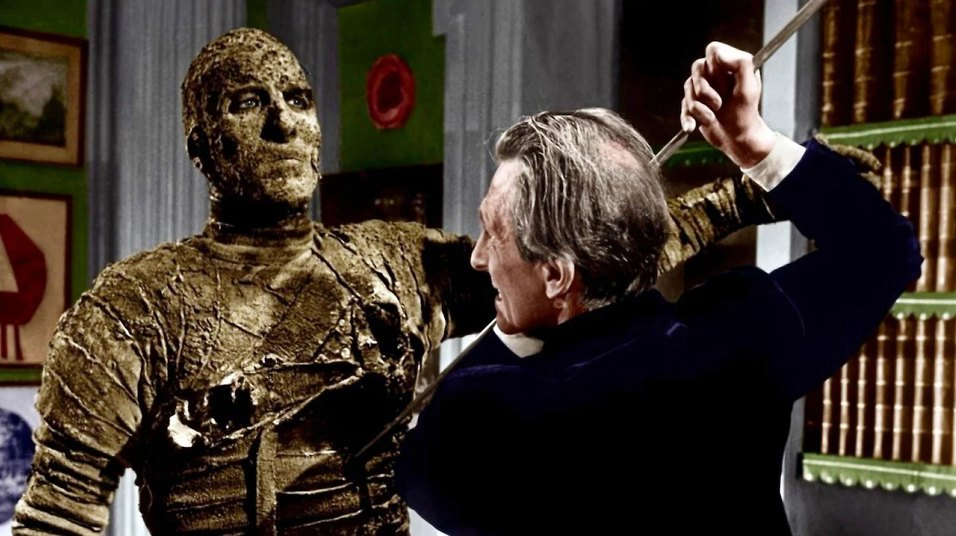
So many monstrosities have come out of a desire to, alone, re-animate the dead, bringing what has been put to rest back into the light, scalding the gods’ aged skin in violent solar exposure, when time had just begun to bathe them in an ever-expanding eternal shadow. Why then are we now encouraged to exhume corpses and embalm them all over again? Mary Shelley’s monster born from Doctor Frankenstein’s equally monstrous hubris ought to have cried as soon as he awoke rather than simply observe his surroundings. So should we, but most humans are woefully ignorant of such things. They rarely understand the implications concerning the archaic rituals of the ancients, hence why un-burial ceremonies are practiced every turning week at the box office. Barbarism strikes us at our weakest points. Evident to none other than the most attentive among us, societies begin their gradual collapse under the weight of these morbid artistic renderings; slowly hairline cracks evolve into stress fractures, and before you are even consciously aware, the boat has already begun filling with seawater. Richness of culture and civilizational depth, lost at sea in the accumulation of wounds, monuments form Atlantis myths miles below. You can, in a flash, lose an Otto Preminger masterpiece like The Man with the Golden Arm to a bumbling fool who thinks achieving mise-en-scène consists of waving a camera around a room, capturing glimpses of gestures between lethal cuts or that it’s graphed out and assembled in blocks along rigid lines. Without a principled artistic order that mediates the relationship between man, technique, and art, he will succumb to the dangers of that aforementioned monster. We must then reshuffle our decks, weed out all the presuppositions and academic reflexes out of shot diets, consult purity–beauty–through utmost lucidity.
The Archaic and the Archaeological
When proposing to use the old to form the new, we don’t mean to bastardize it by copying its form, injecting it with a shock of revival. Alternatively, the goal is to act as the archaeologist does in their day-to-day operation; erecting brand new understandings of long-lost spaces via the compilation of artifacts. Our view of Mesopotamia displays a civilization that, without the digging for artifacts, would remain hidden. The archaeologist will dig for one artifact and then keep on digging around the site to build a context. Is this an ancient marketplace? Am I inside a residence? Is it a church? Or a royal chamber? Objects contain no viable life-force, and therefore they cannot be determined “dead”; even during long periods of slumber, covered in layer upon layer of dirt, they can be excavated and rightfully compiled. But certain schools of thought in the Pantheon of cinema seem to be entirely concerned with bringing the dead back to life. New American cinema was founded on the principle of injecting definitionally dead bodies with a stimulant to revitalize a steadily floundering formalism. The same old stone rolled out from its position as guardian of the dead, and out came Orson Welles, whose deep focus and extreme low angles that consistently reveal the ceiling and arbitrary background information couldn’t be of a more archaic form, commonplace for directors and techniques considered among the most “futuristic”. Those who try their best to be “modern” end up in camp sharing space with the complete opposite of their intention because when one tries desperately to appear a certain way, they never achieve their desires. What differentiates us then from the idolaters lining every ancient historical text, who in our ignorance of ourselves we succinctly view as imbeciles? All this requires a clear definition of what it means for a work or a group of works to be merely “futuristic” in their aesthetic appearances versus being in servitude to the future of the cinematic medium.
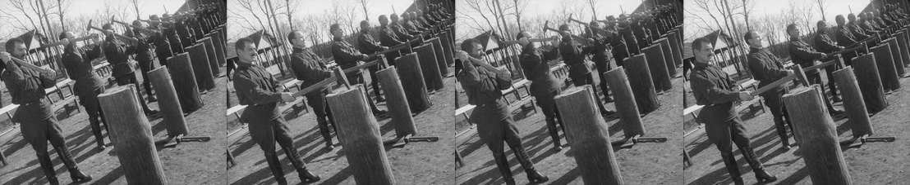
Futurism, across all the mediums it is credited for touching (painting, sculpture, and most brazenly cinema), has done catastrophic damage to our perception of the objective eye of the camera. It is a property which declares cinema uniquely able to render reality far more purely than any other art. Where “futuristic” aesthetics begin to debase cinema’s latent goal can be observed throughout Soviet cinema or Italian futurist painting (which one could imagine inspired certain filmmakers over there), containing compositions laden with filler and gunk not far removed from the New York sewer systems erupting with fumes seen throughout the 1980s in American cinema. These truly are monstrous forms. We see plastered all over a Severini exactly what we witness extended throughout the 70 minutes of Enthusiasm or the 80-odd minutes making up Battleship Potemkin: visual noise, as it can only be described. Desires to splatter the frame with as many figures and shapes as humanly (or inhumanly, which could better describe actions devised) possible, stretching bodies into otherworldly shapes. Spaces don’t survive such a procedure in cinema that could merely be ignored in the field of painting by averting one’s eyes toward another finer work in the gallery. Imagine Cottafavi producing six identical clay copies of Yvette Lebon to flare outward a perfectly beautiful face such as hers filling all unused space in the frames of Milady and the Musketeers. Not only do we see the assault and battery of a space described in that hypothetical, but the otherwise beautiful repeated object or face is drained of its innate qualities rather than enhanced, as is typified in Cottafavi’s technique.
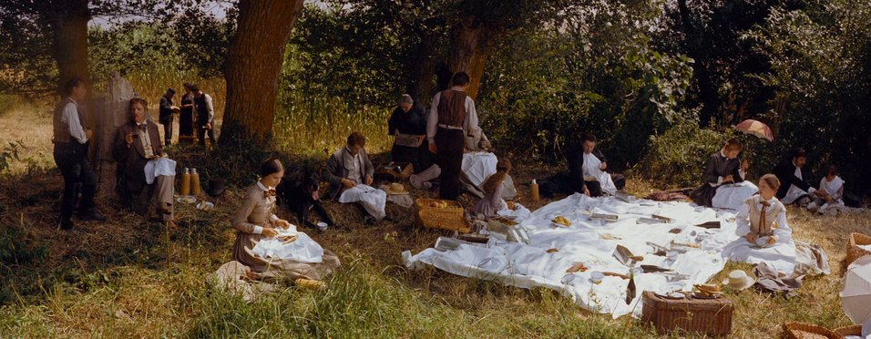
I’m by no means suggesting that those like Vertov, Eisenstein, Cimino or Visconti are intrigued by beautiful things; they are not; instead they, through “futuristic” maximal techniques devoid of actual grandiosification, curate the most banal, common beings, arrange them in rank and file and slather equally dull copies over 180 degrees of sight. In The Leopard, Visconti tries endlessly to formulate a lived-in space; wide shots of men and women staged à la Griffith along different grounds of the frame become nauseous in their forced commonality. They are, however, the farthest possible removed arrangements from sensible vitality. We must ask, to maintain the otherwise fleeting honesty toward ourselves, past the fulfillment of intellectual firings in our tired brains, which leave as fast as they briskly arrived, why we entertain rigidities like these in our films? How archaic is the imitation of Griffith, as limited as he was when making Broken Blossoms in 1919, in 1963? Speaking of Griffith, he once weighed in on the difficulties of shooting “everything”:
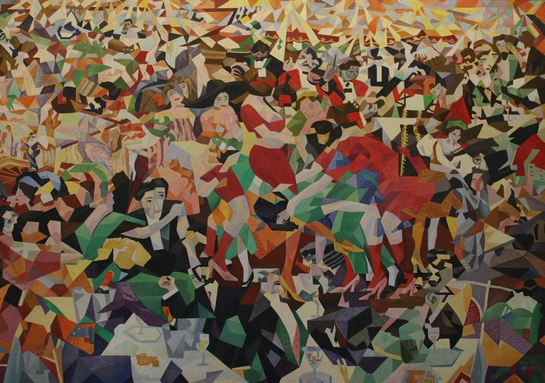
“A shot of a whole battlefield would be incomprehensible because: looking at real things, the human vision fastens itself upon a quick succession of small comprehensible incidents; and we form our eventual impressions, like a mosaic, out of such detail…The director counterfeits the operation of the eye with his lens…and varies the length of shots to avoid the hypnotic effect.”
Griffith understood, throughout his many limitations due to the youth of cinema and a limited technical apparatus, the rules applied to shoot a battlefield to keep with the eye’s natural operation; Visconti does not. The way he frames the “hypnotic effect” isn’t favorable since therein lies an ignorance of hypnosis as it can be defined faithfully (not as a plaything repeatedly probed by idiotic filmmakers named among the “slow cineastes”). But the ultimate goal of cinema, which, in a crescendoed heightening of beauty or rush of violence, becomes absolutely arresting, sitting right on the borderline with hypnotic force.
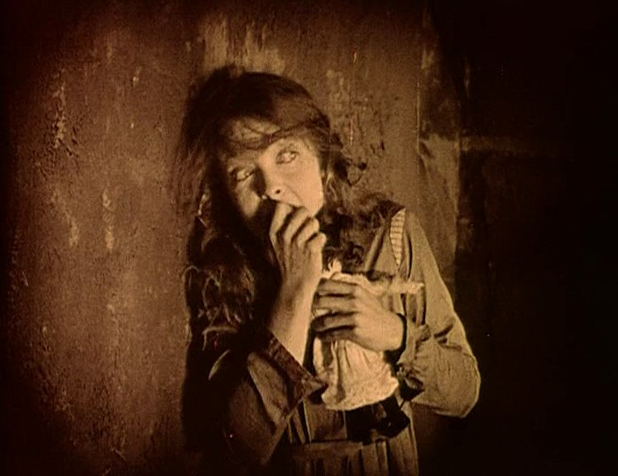
Discovery is equally the goal of the film-bound artist and the archeologist digging in dunes; they work in different lanes that share a pathway. Artifacts, finally exposed to the air, can recount their freedom through a shared amount of labor, control, and an intelligence without which they would still be buried by hundreds of years of natural history. This detachment from soil and subsequent unearthing are for the archeologist what the exaltation of an actor, sublimation of a gesture, or rarefaction and compression forming a definable spatiality are for the film director. There, through that, we hone in on what makes the film director a formidable artist. The director must have a drive to seek such treasures throughout the natural world, utilizing the power vested in the motion picture camera to reproduce reality, as time passes, via greater and greater methods. Forget the vapid expressions so carefully spread around the canon of cinema, from those hyperfocused objects already sanctified by the director’s specific imposed system and are therefore uninteresting in Bresson’s Lancelot du Lac or Godard’s latter experiments (Sauve Qui Peut [La Vie] to Numero Deux), reigning in every beauty-laden line cast in Breathless or Vivre sa Vie, both relegated by time to past follies only currently studied by intellectuals. Such artists are merely providers of pads for superficial brain-functions to bounce off the triangle- and square-edged periphery, hoping to ricochet toward others sitting around them, those focus groups or niches building such a theatrical-spatial falsity. These toys and novelties pass our time rather than fulfilling it, turning childish frowns upside down, answering the quotas set by correctness. When a director begins a true search, he can set forth the stage for a possible burst through impenetrable walls; that being past the locking mechanism keeping mediocre art out of the rather limited halls of our memories.
But cementing art worthy of such a permanence into minds of decreased subjectivity is surprisingly more difficult than ever. It isn't enough to present unrefined discoveries as one would freshly mined ore from a motherlode; the times have garnered more and more specialists but less and less diversity among the makeup of specialties. Cinematic spaces, dry and floundered as they are, don't surprise us when they reject potent works of our age. Cast back into the sea are gems like The Ghost Writer, the product of an aged Roman Polanski and written by Robert Harris, who through his openness allows great room for a mise en scene of fiery revelations to ignite; Cassandra’s Dream, helmed by Woody Allen, whose carnality in 2007 feels as if it were trembling under the ground for many evolutionary cycles; or Munich by the last American filmmaker Steven Spielberg; if he cared less for animatory apparati, nothing would lie in his way to fusing his trajectory with the Preminger of The Cardinal and Exodus. These films represent something wrong with our times. Works of increased interest appear sparcer in a system whose field is contaminated with nothing but dull needles. After the viewing of a good contemporary film, instead of sharp inner feelings which electrify around bones and tissue invoked by films from Hollywood’s heyday, we are left weighing a brutal concoction of thoughts, struck by beauty but never without the realization of its rarity. Something potent arises, then it is blighted and can't be purified.
Thus brings us to the second major part of film direction: selection. That process has been invaded on all fronts, stopping most gems before metallurgical processing. Ore is imbued with an academic analysis, where all becomes stricken with economy and matter, retaining not a single one of its original lines of focus. We remember such days as those unfiltered by critical circles. Works of art served the public as a whole and responded in large part to universalities. Now every work must be a blend of everything to satisfy each clique (camp) from wide varieties of different schools of thought. Directors can no longer hone a gaze on “a” face or resemble anything at all classical because then we are neglecting a certain sect of such a division-ridden population. How many films nowadays bore holes into appearances and suggest a context radically different from what is visible? (That may be the one remaining element of Bresson in contemporary cinematic practice.) How many directors quaintly or actively defame their actors with postulations and grotesque aesthetics? A major part of our goal is in superseding falsity using the surface and all its available area to reveal spaces or actors’ inner truths. So to penetrate below the level of appearances and revel in textual effaces pivoted around evoking societal currentness of now or “of a time” can't be framed as meaningful. In reality, on the most charitable level, these are likenesses and can, in their pontification, become the monstrosities of taxidermists (Kurosawa with Wife of a Spy, Park with Decision to Leave, Aster with Eddington, Jude with Kontinental ‘25 and everything to premiere at Cannes now or in the foreseeable future). Nobody who chooses to sit down for two hours in an uncomfortable theatre seat cares to be lectured on politics regarding systemic logic (or illogic). We all follow ethical codes of our own or larger moral collectives, so the suggestion that the most vile Nazi can and should be rehabilitated by moving images is a naive gesture.
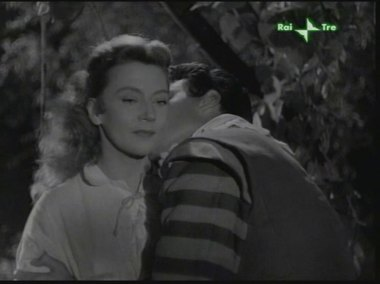
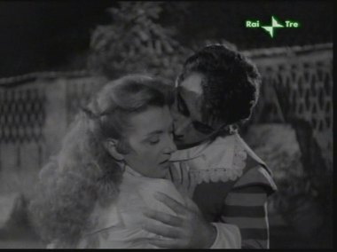
So then who is such a film for? We have already determined what the answer is: for circles of intellectuals who choose to debate endlessly over symbolism and analogy. Leaving these sensations to literature and newspapers seems the most sincere proposition, given cinema is an art which should attempt to seek an objectivity in the cosmic totality of the universe. Being attached to earthbound problems of the material or psychological bogs so many narrative potentialities down into pure logistics. In 2026, there is not even a fervor to discover among most directors; they rattle the same trees, leaves that once fell fall again repopulating the ground. Under the visor of creation, there is continuous subsidized destruction of favorable technique. Entire cultures pedestalize idol worshipers who, with their select group of stationary idols, play toward the greater cultural poisoning of direction we can only describe using a word least associated with an artistic medium subject to (what should be) constant evolution: archaic.
Dead Styles
When death occurs, during the funeral, opposed to an actual consecrative process, we see a routine or meditation that, when finished, leaves a gravestone with text on its frontal side that fails to penetrate even the dermal layer of that being’s vital beauty. Individuals cry, and the pastor recites a prayer, but who, from this, understands any semblance of beauty? What is done in graveyard rituals should not reflect the actions of ours within cinema. The dead are no longer conscious beings that can be removed from their plots and flaunted around like puppets, but long-dead styles continue to permeate, poisoning the breathable air in most repertory film spaces. Art has fallen deeper and deeper into a paralytical state. Why do you think theatres that screen older films must be referred to as repertory now? Because it is nostalgia that reigns supreme, older films are rarely perceived for their timeless qualities or ascension beyond typicalities. People are forced to see a film like While the City Sleeps by Lang in a context entirely dependent on “old aesthetics”. It is just the same as how Mourlet described the screening of silent films in the 50s, but there, in most cases, people in fact were viewing novelties and oooing and aweing over technically fraudulent eddifaces. Today, screens are still laden with these works but under those different, previously mentioned contexts that lump together all facets of cinematic art into one blended whole regardless of artistic merit. No other art struggles with such a horrible destiny. Galleries still pick from the most fascinating artists to run programs on; we are taught the most potent youthful literature in grade school, and the finest plays are still remounted. What then leads cinema to be viewed as a lesser art so much as to neglect the works closest to sublimity and even, when showing those works, completely misunderstanding them? We have gone over the public’s growing leisure, intellectuals, academia, and other cultural breakdowns, but none of these are directly responsible for the blatant flaunting of novelties and antiques to highbrow grandparents and college kids. In order to understand our societies’ obsessions with nonsense, we have to identify these “dead styles” that have failed to escape their times and become universal. Futurism and all elements considered “futuristic” have already been discussed, but this also applies to “modern” things; these words are interchangeable, equally negating their meanings. I think neorealism after Rome, Open City, and Journey to Italy– all those festering “modern” expressions are decrepit in their suggestion that a still image is by far more powerful than a moving image, hence why these works outside of Rossellini have become irrelevant to the public in the 21st century. People cannot absorb reality through an image or a year in time, but throughout millions of years, habitats and currencies are bound to their second in history and never exit that pigeonholing. The style that resembles even less than one cold second is the transcendental style, which sees itself as a human recognizes an atom in a chair. Spatial meditations break with the flow of information natural to the human eye, penetrating far beyond the spectrum of the visible down to the atomic level; these are familiar in Tarr, Costa, Benning, Akerman, Dreyer, or Diaz (one cannot ethically lump Tarkovsky, Ozu, Rossellini, or Flaherty among these) and represent the half-truths of scientific research centers with their series of gerbils and lab rats to be probed, poked, experimented on.
One could make a fine argument that false realities are worse than blatant lies. You can supposedly conjure a spirit through being patient around a Ouija board, but what is born from this process isn’t the person that had lived; rather, you created a dead version of that previously living human, or a broken window. Few filmmakers have been able to achieve transcendence, in the “transcendental”, trapping themselves within the microscopic realm they search, akin to the graverobber who gets buried by falling rubble. We remained too long in the realm of the forbidden and paid the mortal price. Forbidden or unattainable things aren't the enemy of cinema; it is those who make a career out of the menial objects of forbidden nature like Bezos’ toothbrush or a single peasant’s cow. Movement is the antidote to this stasis which erodes away memories and the presence of souls, the remedy to a cinema stuck wiggling around, film to film, with no apparent sense of direction, eyes locked on the microorganisms who float around in dust particles.
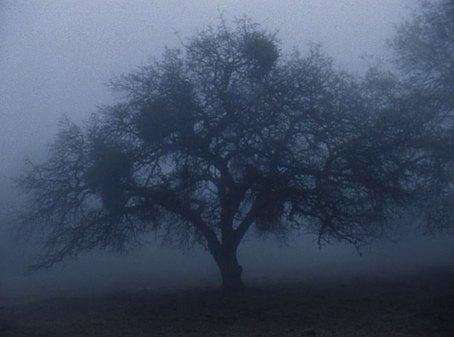
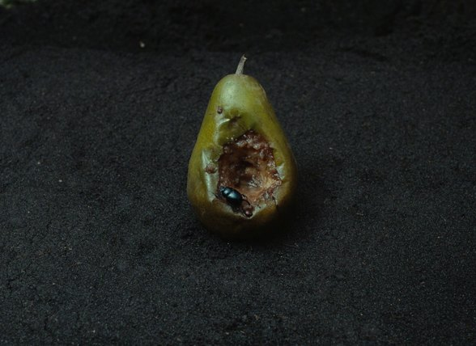
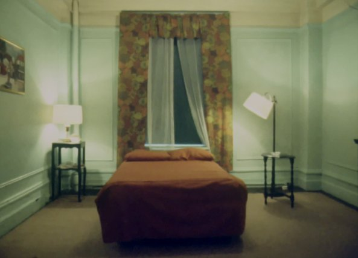
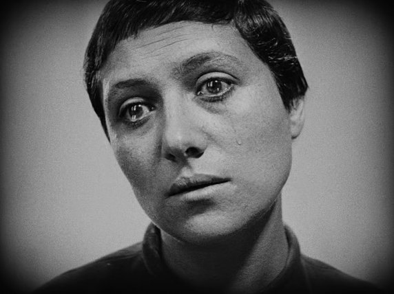
Homage, also known widely as pretention, is worse than novelty or the scientific, as its existence de-purifies the images that they manifest. Once shown, homages form a separate identity against the forces constituting a film, wherein the next shot will be entirely indistinguishable from the homage and the homage from the next shot. Graves expelling the vitality of movement (whose achievement is called mise en scene) from their dark environments, the farthest ignorance of the twitch of an actor's eye, do not embody the totality of a filmmaker's goal, and reduce it to the most offensive attempt at breadth (Coppola after 1975, Paul Thomas Anderson, Kubrick, and too many others to count).
Through recognition of what is “dead,” we understand the plight in which we find ourselves, the nonsensical treatment of the “whole” or everything as a directly filmable thing, without blinking. Results vary from portraiture to what is called "transcendental.” Both modes of filmmaking masquerade partials as true reproductions of reality. We are lost, but there must be a way to upend these foul techniques (if they can even rightfully be called techniques) before they consume the rest of cinema’s remaining beauty. People have become more interested in filming statues than faces; this is the crux of our problem: debasement of the human face and body, erecting idols on top of flower beds. Some wish to wash and tend to gravestones and apply fresh flowers or place a memento by its head. Why do we wish to decorate rather than discover? Inventions were meant to become obsolete in due time.
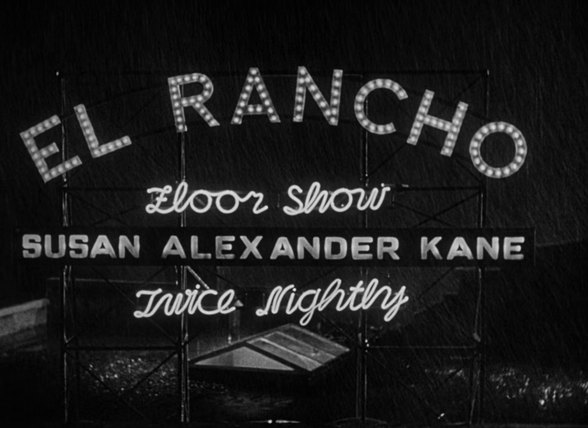
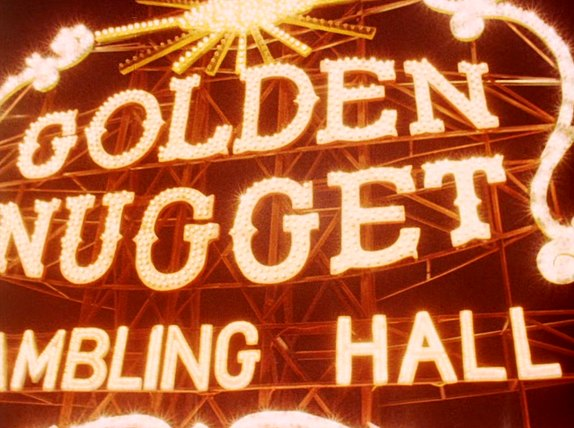
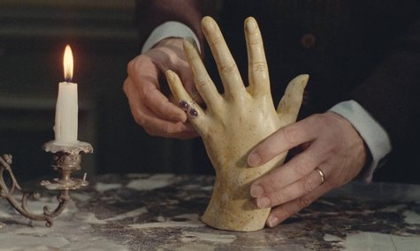
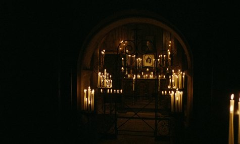
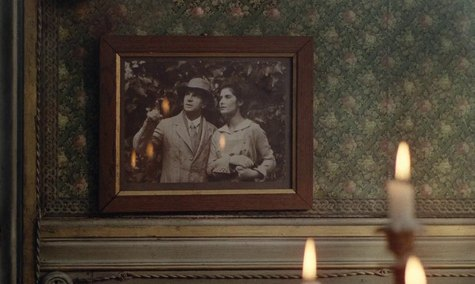
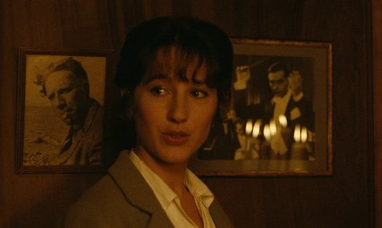
A “Logic” Against Natural Order
Quickly dispatching man’s eternal toil with his nature, he swallows the poison pill of logic. That being the logic provided by academia. The filmmaker takes a gander at the field spread with an infinity of historical bodies across many histories and supplements his immediate recognition and forthright response with mathematical diagrams, forked roads bearing obviously choiced pathways, and worse of all, hollow skeletal husks with ‘ideals’ painted on their expressionless faces. A thousand, a million, filmmakers fit this allegedly close-minded provocatory assignment, in their constant meandering and lackadaisical attitude toward actors, which has plagued the art since its inception but has only become more prevalent with time as more and more cineastes are jammed into the logical rut. The Wrong Man and Hitchcock, To Have and Have Not and Hawks, and the worst of Preminger Anatomy of a Murder to contemporaries such as James Gray in We Own the Night or Jean-Claude Brisseau in nearly everything. Each name (except for Otto Preminger obviously) on this list requires the viewer to render themselves in submission to their will, rather than to the will of the world. Imagine a close-up arrived-to without the faintest sense of intimacy; many of our poor film experiences can be diagnosed by invoking memories of these close-ups, and yet we still blindly return to our seats for the next showing on the bill. Filmmakers who require further academic application to their images beyond basic sight and reflex cannot expect the populous to bend to their demands, come back again and again to receive matter to gratify one's sense of intellect, which in no time will disperse and require re-inviguration like an addict chained to his needle. Remember in conversation with William Friedkin when Fritz Lang proclaimed:
“If a film doesn’t express what a director wants to say and he needs to give an interview to explain it, this director shouldn't be allowed to make any films.”
Imagine telling this to the avant-garde hacks of our time and the distant past; their entire bases would be extinguished. Intellectualism only fuels this drive back and forth to the resounding empty theater, perfect spaces for addicts among us to pass their lethal fixes, and who are we to deny the shower thoughts these films provide? It isn’t like there are alternate filmic lineages that run elsewhere. How can those whose ancestors are Howard Hawks adjust sights to the more potent Allan Dwan? Exposure itself cannot change the convictions of one addicted to academic logic in filmmaking defined by analogy and symbol. Hawks deals them isolated pockets of the world where rules are inverted from reality to the rule of a dictator behind a pen, realms applicable to none other than what the filmmaker imposes upon them. Trees can be trees until the goalposts shift and he figures they ought to be something else. Characters await commands from a center terminal surgically removing the actor from images; agonizingly both humans and the earth that surrounds them equally disappear. Belief in such a system isn’t easy to cure; it can’t be vaccinated. Rehabilitation can only succeed if the user is open to a rigorous submission to beauty and purity, trading pitifully phony reproductions and novelties worse than those, which don’t even deserve recognition among the fakes for rare earth objects.
So then introduces the second half of the question after diagnosis of each of the many diseases: what styles actually serve the future and evolution of the medium?
Mise en scène: Its Truth
Mise en scène is a term flaunted around and invoked by the widest variety of cinematic ideological sects, but who actually seeks in it an origin that mounts a greater truth to the term? I would first criticize the intelligentsia to whom this art represents no more than an “element” or part toward the construction of form, equal to montage or blocking. Here, every living being has free, unrestricted access to play around with and therefore experiment with it. We see this first account exemplified throughout the early writings of the Cahierists, Truffaut, Astruc, Bazin, Valcroze, etc., all slathering the term plentifully from Hitchcock to Ray to Wyler and Welles without a semblance of precision, to the point where it just seemed like the previously stated “element” to any reader unfamiliar with both its individual art form and the one that we wish to maintain it (sadly, we can’t prescribe these equals in the current day and age). The formalists aren't as promiscuous; however, they still hold a view antithetical to its nature. If we skip the aesthetes, who don't believe in anything, and the public whose ignorance is bound to the term and not its nature. What really is it, then? I would answer simply but without subsequent fracturing of the truth. The key to understanding, to penetrate the force which gives cinema its identity, is to realize that we are dealing not with a part, but a whole, an art, whose purity is in a result. One achieves mise en scene and cannot obtain even a mere idea of it from assertions of the contrary nature. Simply being attentive to all cinema, recognizing a pattern that resembles a theatrically ordered arrangement of actors and declaring “mise en scene” will keep the art we love in a rut dug by our own ignorance of its forces. You cannot complete a puzzle while missing the pieces that round the edges of the form. For example, what would Sign of the Pagan be without its final 30 minutes? Or Close Encounters of the Third Kind? Seeing a film develop, one has to focus their retina on the entirety of the piece, so if you discount the area in which the film attains the properties of mise en scene because its earlier sections appear formally imperfect, you cannot attest to seeing a film. How can you maintain honesty whilst thinking without understanding? This by no means forgives a director's poor selection process and possible spatial ignorance, but these are elements which have a major effect on that prescribed “whole” seen in the result. A staggered gait doesn’t keep the walker from achieving his exercise; choosing to wear cleats will.
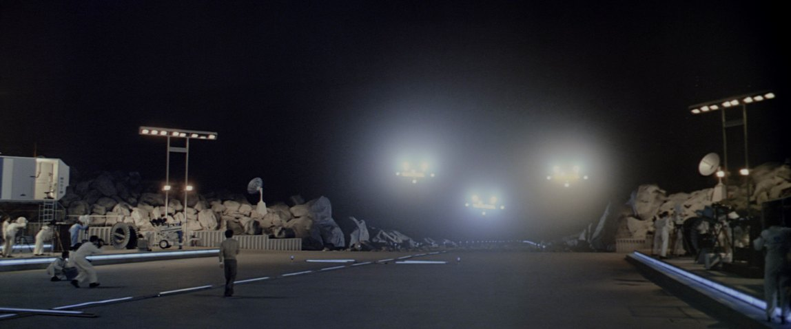
If we start with a screenplay, in this we have obtained a point on a ground from which we can ascend via a launch. A narrative can be imprinted onto paper or an image equally onto celluloid, but if all that a cinema can boast of is a story without intelligent application, as potent as it might be alone, nothing greater than literature has been struck onto a visual apparatus. Any of us who have read the culture shock titled On an Ignored Art2 will recognize the concept of glimpsing but not attaining the rich purification effect of mise en scene.
John Ford peered his quick Irish glance toward Murnau’s monolithic presence but took a decade to adjust his focus and another one to indent a partial stamp onto his own work. Godard became too obsessed and sidetracked by didacticism. Hitchcock never allowed himself to free the bindings of Soviet inventions (which even the Soviets themselves eventually denounced). Early Renoirs like The Human Beast, Swamp Water, or A Day in the Country float with the lightness of a lotus flower gliding along active wind-born waves as storm clouds roll in, lacking only the strengthened element of a controlled intelligence known in the greatest of our history’s directors to protect the beauty held in the image of the flower, rarefy an effect from a gesture, or series of, and then possibly flirt with the sublime. Think of the noble hero who selects paths accordingly to guarantee the princesses’ safe voyage home. For Swamp Water, this would manifest if there were a simple application of understanding toward the nature of the swamp, which in the film, we float downward. Meaning some level of constricting force must be upon Renoir’s European beautiful artifices, making them resemble more the brutality of the swamp, the animalistic rage that evolved and spread through the strands of its DNA over millions of years.
Opposed to every property consisting of the formulation of mise en scene, Paul Schrader (characters preceding actors), James Gray (rigidified faux classicism), Kiyoshi Kurosawa (the anti-Mankiewicz), John Carpenter (Hawks structure), and many other respected names, including all considered “psychological”, operate through wrestling-style predetermined results whose mechanisms follow rigid guidelines, those being utterly distinct, onset a strangulation restricting vital airways. Functions then wane until the soul escapes its vessel and the body dies. By then, defibrillating the heart provides no effect of reanimation. We are left with visual porridge whose gunky exterior is caustic to the eye. In a situation like this, one can lie to oneself and consume such fetid waste or submit to the body’s impulses and escape.
Here we come to the problem of the “image”. The aesthete will see an image in a film, decontextualize it, and follie with their gaggle over properties that matter in photography or painting, these arts which do not involve the language of cinema. The formalist understands that a mise en scene can't be discovered through a single image but still sees it as a vessel carrying information in a greater context one can impose themselves or a system of thought over. Hence why so many formalists glean from the remnants of literature: a false cinema. What I am proposing is the negation of the image and an eye that doesn't view these as texts in need of a magnifying glass. I suggest cinema re-establish its purity by banishing the superficial to the lesser arts; through this, we can foster universals inside the staging of actors in a space, also known as the imposition of a staging upon a spatial context, whence the director can, through the guiding lines of a narrative, select the beauties and tragedies most potent to be held in the appearances of the actors and the spaces they move across. Equally involving the image alone comes the problem honed by the preservation of cinematic systems which foster analogous relationships between objects and reject the possibility of something containing meaning purely within itself. Those objects are seized of their beauty and paraded around like circus freaks. Why have we still not learned that metaphor waned in purpose all the way back when cinema gained the ability to speak for itself? Why can’t we accept the technical evolutions which separate ourselves from aged formal juvenility? Cinema was never about expression or ideas; it was taking the “natural” and morphing it to the world and intelligence using the apparatus of staging.
We already know the power vested in the theatrical experience above all other methods of cinematic viewing, but it is about time to cease engaging with the distractory works and align ourselves back in the service of the public.